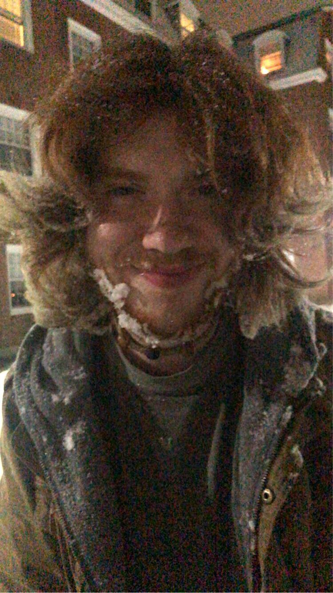

The love of my life
(part of this page is going to be mainy directed toward him for when he see's it so- sorry if this is awkward for any other viewers)
This is Fern
If you haven't guessed already by how much I've been going on about him, Fern is my boyfriend. He's changed so much yet not at all in the time that I've known him. He is one of the goofiest people I know and he always knows how to make me smile no matter the situation. He has a deep passion for art and a caring soul- Don't let them fool you though he’s strong, honestly could probably take you out. He's smart- much smarter than he thinks he is- and god did I mention how funny he is? God also, not to brag, but he's absolutely gorgeous Genuinely, he might be the prettiest person I know. I mean, and even looking from an outside perspective, You've got to admit, he is pretty aesthetically pleasing.
⇘ Examples below ⇙
Art
Fern has an amazing passion, drive, and skill for art, specifically in ceramic art, though, he does enjoy the other mediums. In fact, it's this passion that drives him to his career, aspiring to be an art teacher on either or both a K through 12 and college level- A career that I fully support. I've seen the works that he's done and they're honestly amazing- Something about seeing his drive for it is nice. Recently I got to do it with him, and I think it was one of the most fun experiences I've ever had. He doesn't take his art too seriously, though. He uses art for art, something to express yourself with. In something to have fun with, not something that needs to be perfect. Something I value about him a lot. His idea that there is beauty in imperfection.
*:･ﾟ✧Fern in his natural element*:･ﾟ✧
Here's and extra that I just really like

To: Fern
Whenever you see this, I want you to know that I love you with everything I have. I'll probably just end up sending the link to this site to you without saying anything and making you read through it instead of screen-sharing it with you and waiting for you to read everything. And I've been joking about this for a while, making a “fan page for my boyfriend” And it's finally here. I thought it'd be fun, And I don't think there's. Enough that I can do to show you how much I appreciate you. So here take this culmination of everything I've learned in this class, dedicated in appreciation to you. You mean the world to me, My sun, my stars, my knight.
I'm sorry- I just love my boyfriend so much..
I honestly thought that I'd have more to write on this page, but I don't think that I have the words to describe how much. I just truly love and appreciate him. I also don't want to go into too much detail about him and personal things to him Because like I said, he has no idea that I'm making this and it's hard to get his consent on what I can share when I'm trying to not give away the site. I can tell you that his top three music artists are Hozier, Nirvana and Nujabes. His favorite colors are green- like a dusty earthy green- earth brown- and he likes soft yellows. His favorite food is fruit- he loves figs and oranges. He wears his shoes till they break. His favorite flower is Lily of the Valley. He's a vegetarian because he just believes that the industry isn't right. He loves Dead Poets Society and God, don't get him started on Judy Garland. He hasn't always had it best by any means. He's one of the most optimistic people I know. He always seems to have a smile on his face. I’m not always the best at putting all the little things into words, but it's all the little things that make me love him more and more every day.